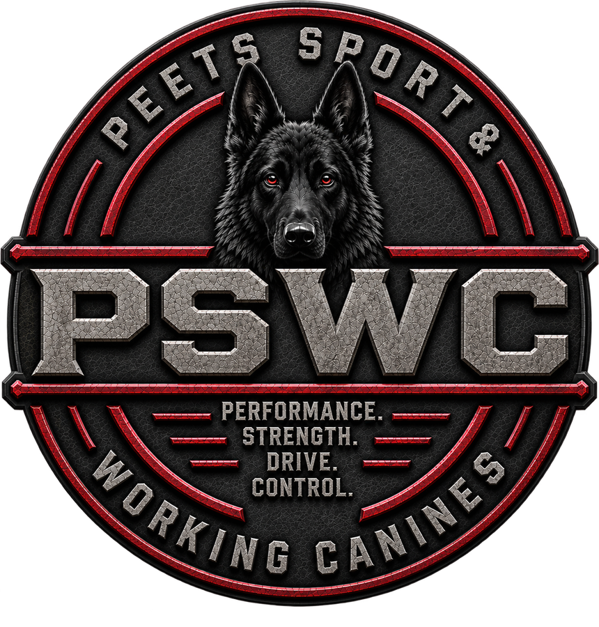
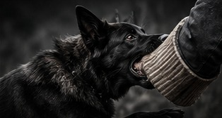
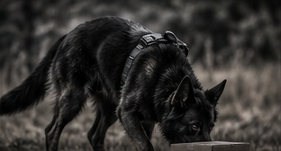
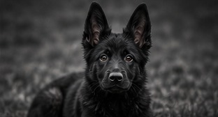
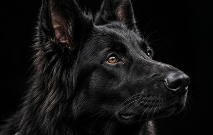
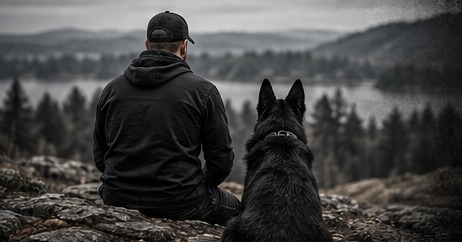

Build the dog.
Develop the team.
Sport • Working • Obedience • Development
Purpose-bred training. Clear communication. Real performance.
Three routes, one system
The same principles run through every dog that comes through PSWC — clarity before pressure, foundations before finish, and a handler who understands why the dog is doing what it is doing. Only the destination changes.

Sport
Structured development for dogs headed toward Mondioring, IGP or protection sport — built on engagement and clarity rather than compulsion and noise.
Learn more →
Working
Odour work, environmental exposure and task reliability for dogs expected to perform somewhere other than a training field, on a day nobody rehearsed.
Learn more →
Companion
The same foundations applied to the dog that lives in your house. Most owners do not want a titled dog — they want one that is easy to live with. That is a training problem too.
Learn more →
Vesi
× Wesuvius von den Sportwaffen
Vesi is the clearest record PSWC has of its own training system. Rather than describing a philosophy, this section documents one dog being built from the ground up — what was worked, in what order, what went well and what had to be revisited.
- 01 Puppy Foundations
- 02 Environmental Development
- 03 Obedience
- 04 Drive Development
- 05 Sport Foundations
- 06 Mondioring

Built on experience.
Driven by development.
PSWC is dedicated to the thoughtful training and development of sport and working canines. The focus is clear communication, structured progression, and performance that holds up outside the training field.
The sport and working background is the standard everything else is measured against — but the same mechanics that produce a reliable competition dog produce a reliable family dog. The bar does not drop because the goal is smaller.
- Training Programmes
- Working Applications
- Sport Development
- Client Support
- Education & Resources
Written for people who train dogs
Not an SEO blog. Working notes on the problems that actually come up.
Building Engagement in an 11-Week-Old Working Puppy
Engagement is not enthusiasm and it is not obedience. It is the puppy choosing you over the environment — and it is trainable long before any command is.
Read →Drive vs. Arousal: They're Not the Same Thing
A dog screaming at the end of a line looks like a dog full of drive. Often it is a dog that has lost access to the behaviour it needs to get what it wants.
Read →Start with an evaluation
Every programme begins the same way — an honest assessment of the dog in front of us and what it will realistically take to get where you want to go.
Start an Evaluation →